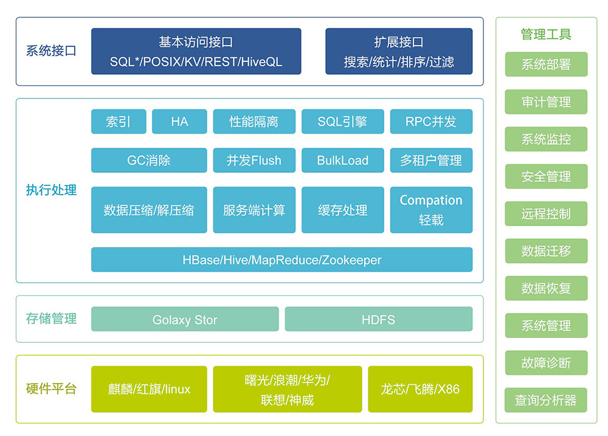
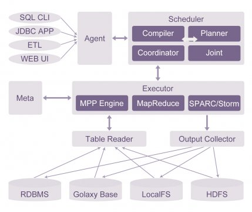
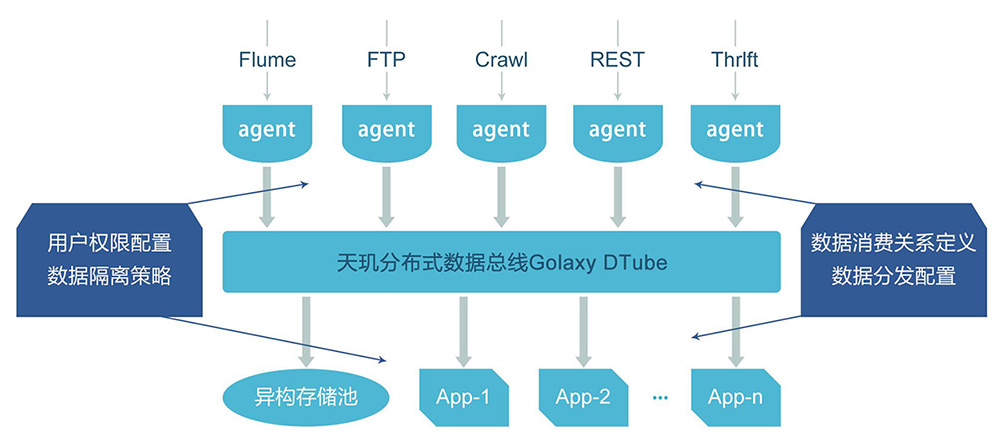
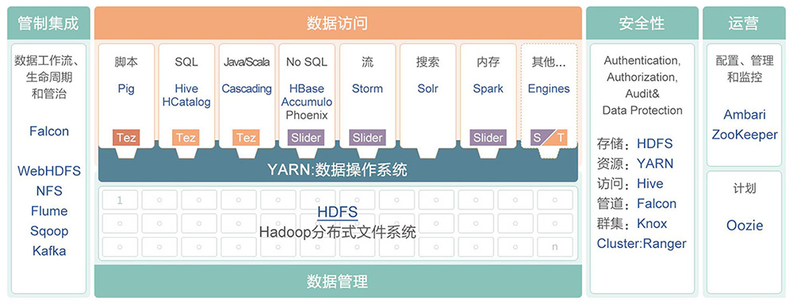
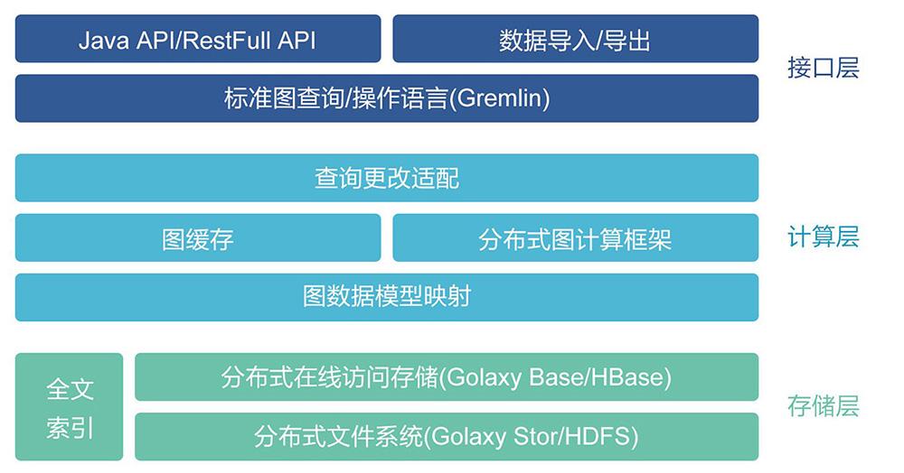

Golaxy UDFS 针对海量数据存储应用而设计的大规模通用及群存储系统，对外支持标准文件访问接口，可构建与通用服务器之上，功能上可替代集群NAS、SANFS 等分布式文件系统产品。
应用场景：
Golaxy UDFS作为分布式文件存储池，适合对大数据场景中非结构化数据的存储，比如图像、音视频、文档等文件。同时其可单独应用于存储虚拟化、云存储及传统HPC高性能计算领域。目前已在上述领域取得广泛应用。
Golaxy Base分布式列式数据库系统
构架在分布式文件系统之上的分布式列式数据库系统，能够为海量的结构化和半结构化数据提供高效存储、实时处理及离线分析的完整解决方案。
应用场景：
Golaxy Base 适用于海量数据实时查询应用、海量数据高并发分析应用以及海量流式数据处理分析等。
针对大数据场景中结构化数据，提供复杂SQL分析功能；并保证千亿条记录，大于百TB，大于64节点规模下的并发访问性能，同时提供低成本可扩展的解决方案。
应用场景：
定位为“海量数据仓库”，面向高价值密度的EDW及商业BI 分析领域， 其对应商业产品为Teradata、Netezza及GreenPlum等传统数据仓库产品。
用于连接各产品组件的数据通道，提供数据缓存、转发等功能。功能上等价于分布式消息队列。
应用场景：
Golaxy DTube作为数据通道，针对业务逻辑实现数据流定制。
Golaxy Hadoop就是基于Hortonworks的HDP2.0.6进行定制化的版本，其对原生系统做了可用性增强、功能增强及性能的优化适配，为大数据的存储和处理提供一个高性能，高可扩展和低成本的平台。
Golaxy Hadoop是一个整合的大数据处理平台，主要用于大数据存储和分析基础平台等应用场景。
大规模图数据的存储和计算，是分析和挖掘社交网络、通讯网络、知识库网络等图数据中巨大价值的重要基础设施支撑。
应用场景：
对于复杂图数据的分析与挖掘，在大数据时代具有很好的实际应用价值。
针对天玑大数据产品组件的统一运维管理平台。完成对数据分析平台的安装、部署、配置、运维、监控、数据操作等功能，并同时提供命令行和图形两种管理界面。
应用场景：
Golaxy BDEP提供两个子平台，分别对应“系统管理员”和“数据分析师”角色。前者主要进行系统安装、配置、部署及运行时监控，后者主要提供各组件的功能界面，提供数据分析师一个在线分析、实时展示的工作平台。